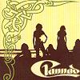

Celtic Lyrics Corner > Artists & Groups > Clannad > Clannad > Thíos Chois Na Trá Domh
|  | Thíos Chois Na Trá Domh |
| Credits : | Traditional; arranged by Clannad |
| Appears On : | Clannad |
| Language : | Gaeilge (Irish Gaelic) |
| Lyrics : | English Translation : |
| Thíos cois na trá domh, in ndoimhneacht na h-oíche | Down by the beach, in the deep of night |
| An saol mhor ina gcodhladh, 's mise liom féin | The big world is sleeping, and I am alone |
| Na h-éanacha mara ag scairtigh go léanmhar | The sea-birds are calling sorrowfully |
| Cosúil le h-anamnacha bochta i bpéin | Like poor souls in pain |
| Ionlán gealaí 's iomlán rabharta | Total purity and total abundance |
| Aoibhneas 's ciúineas, 's áilleacht sa domhain | Bliss and calmness and beauty in the world |
| Crónán na fairrige ag dul siar ar mo chluasa | The murmur of the sea going into my ears |
| Bog-cheol an uisce ag sileadh sam abhainn | The soft song of the water flowing in the river |
| Istigh ar h-inseáin tá sean-reilig bheannaithe | Above on the headland there is a blessed old cemetery |
| An áit inar mhaireadh naoimh sam aimsir fadó | The place in which saints lived in times long ago |
| Tá daoine istigh ann ag chaith seal do h-aerach | There are people within spending a while carefree |
| Ní shiúlfaidh siad thar fán chladaigh níos mó | They will not walk around on the shore anymore |
| Bhuail uaigneas m'intinn 's mé ag amharc ar an reilig | Loneliness strikes my spirit as I look at the cemetery |
| 'S mé ag meadhradh ar dhaoine istigh ann ina luí | And I'm thinking about the people in there sleeping |
| Fir a's mná óga, seandaoine 's páistí | Men and young women, old people and children |
| Muintir mo mhuintir 's cairde mo chroí | People of my people and friends of my heart |
| Tá no coiligh ag glaoch 's na réalta ag bánú | The cocks are crowing and the stars are fading |
| Tá an gealach ina luí 's ní fada go lá | The moon is setting and it's not long until day |
| Slán agat anois a shean-reilig bheannaithe | Good-bye now, blessed old cemetery |
| 'S na daoine a shiúlfadh liom síos cois na trá | And to the people who walked with me down by the beach |